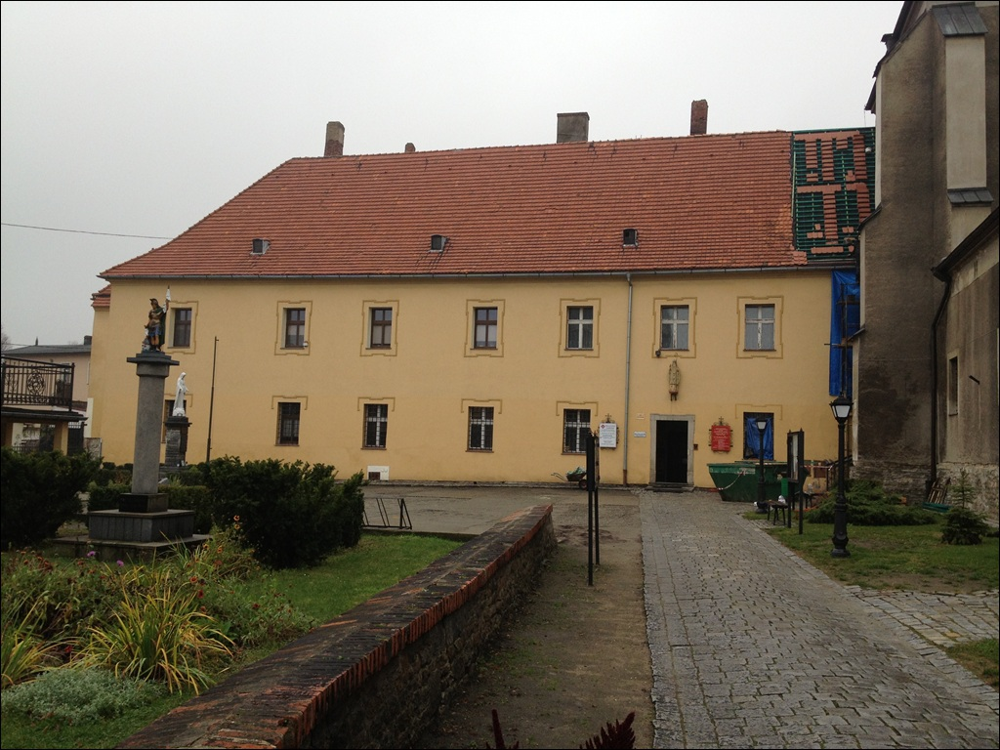

Klasztor Boromeuszek
Przylegaj±cy od strony po³udniowej do Ko¶cio³a Podwy¿szenia Krzy¿a ¦w. Dawny klasztor ¦w Klary, za³o¿ony przez ksiêcia Bolka I w 1295 r. W swoim czasie odegra³ on
du¿± rolê w ¿yciu gospodarczym okolic Strzelina, jak te¿ w utrzymaniu polsko¶ci na tym terenie. Przez kilka stuleci by³ on nie tylko jedynym ¿eñskim, lecz w ogóle jedynym
klasztorem na terenie Strzelina. W ¶redniowieczu by³ miejscem gdzie samotne kobiety mog³y znale¼æ schronienie, opiekê i nauczyæ siê sztuki czytania oraz pisania.
Budynek dwukrotnie uleg³ zniszczeniu podczas po¿arów, w XVI oraz XVII w. W 1689 r. przybyli z Wiednia augustianie rozpoczêli odbudowê klasztoru. Otrzyma³ on ma³o interesuj±c±
formê skromnego stylu barokowego.